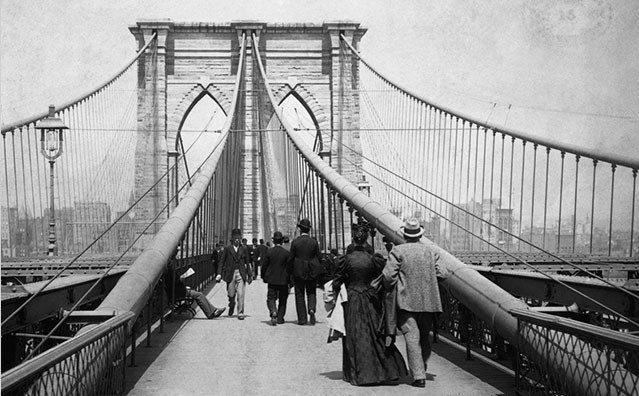
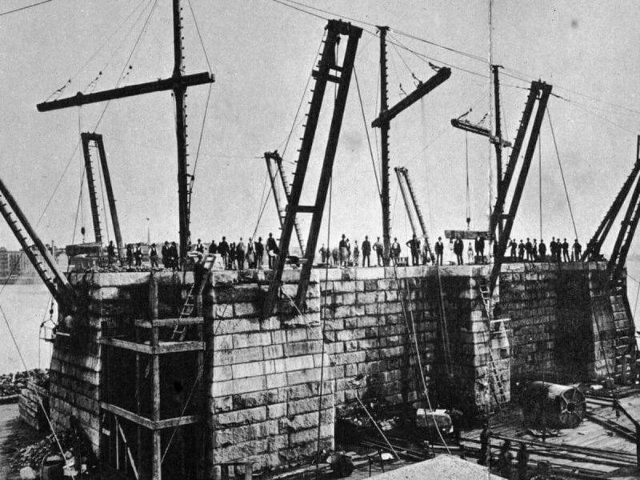
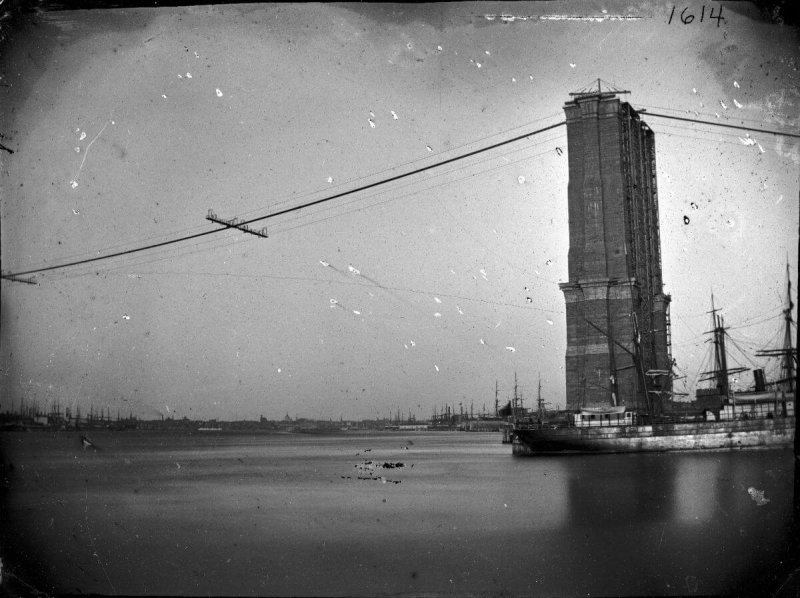
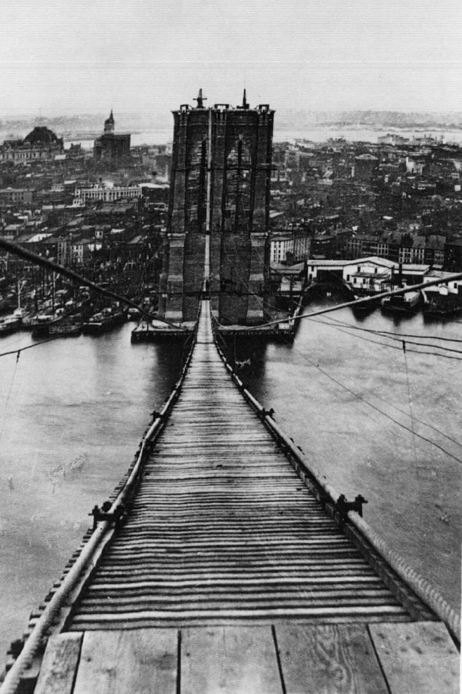
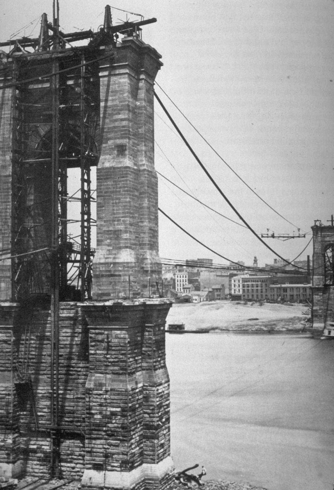
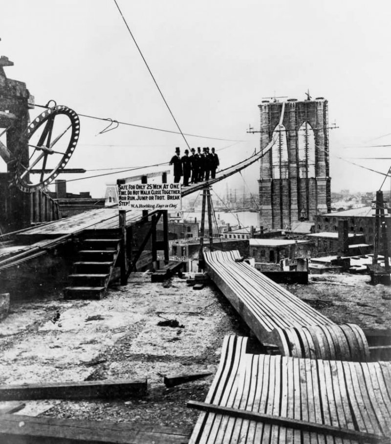
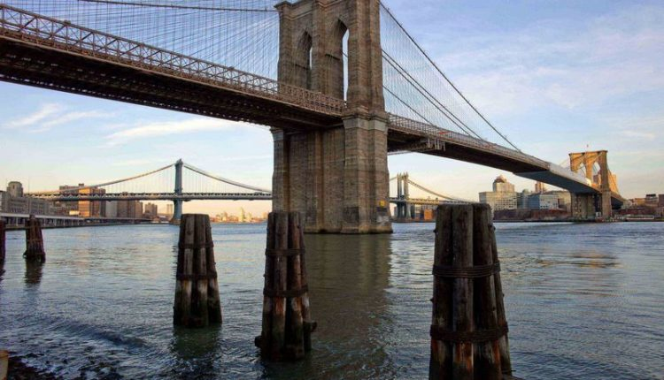
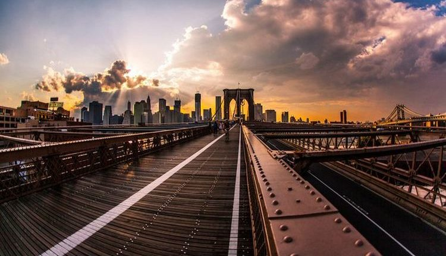
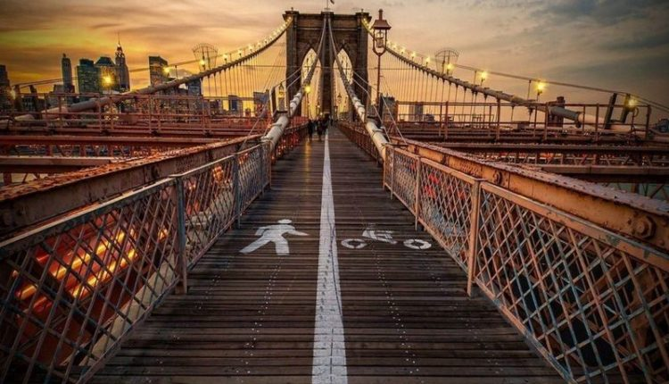
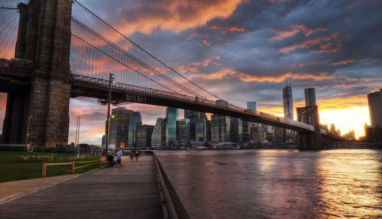

ИСТОРИЯ

Градоначальники открыли Бруклинский мост весной 1883-го, что
позволило решить давнюю проблему географии Нью-Йорка – рабочие места находились на
Манхэттене, дешевое жилье – в Бруклине. Инженеры пытались найти решение ещё в начале
девятнадцатого века, однако лишь во второй половине позапрошлого столетия наука отыскала
необходимые технологии.А ещё появился человек, придумавший новаторскую идею как соединить
два острова, удаленные на расстояние почти 2000 метров (длина сооружения 1825 м), и
одновременно не помешать судоходству. Переехавший в Штаты немецкий инженер-мостостроитель
Джон Реблинг (Роблинг) придумал проект, где ключевую роль играли 80-метровые башни, что
служили опорой для стальных канатов, удерживающих пролеты. Также знаменитый конструктор
спроектировал кессонные камеры, с помощью которых землекопы опускались на дно реки

Согласно геологическим исследованиям твердые породы начинались
на глубине двадцати пяти метров ниже дна Ист-Ривер. Именно на них инженер запланировал
опереть башни, для чего и потребовались кессоны, чтобы убрать 25 метров мягкого грунта. На
тот момент кессонная болезнь являлась загадкой, её механизмы и характер медики выяснили лишь
спустя три десятка лет, поэтому в 1870-80-х строители гибли не только от обвалов, аварий,
несчастный случаев, но также от кессонного недуга. В общей сложности в период строительных
работ умерло около 150 человек. В том числе создатель проекта Джон Роблинг, получивший во
время стадии подготовки тяжелую травму, в результате чего ему ампутировали пальцы на ноге.
Спустя три недели Реблинг-старший скончался, а его дело продолжил сын Вашингтон, не
избежавший общей участи - инженер пострадал от кессонной болезни до частичного паралича.
Строительство завершала его супруга Эмили – женщина в кратчайшие сроки изучила основы
профессии и смежные науки, чтобы под руководством парализованного мужа продолжать дело всей
жизни клана Реблингов. Героическая Эмили собственноручно открыла Бруклинский мост 24 мая
1883-го, когда первой проехала по нему в коляске и с петухом в руках в качестве символа
триумфа.

Строительство 1869-1883.
Кроме инженеров-архитекторов, монтажников, каменщиков,
землекопов и других рабочих стройку века посещали мастера фотографии, благодаря усилиям
которых в истории сохранились фото строительства Бруклинского моста и мы можем наблюдать все
стадии великого процесса – от первых шагов до триумфального открытия.

Бру́клинский мост — один из старейших висячих мостов в США,
его длина составляет 1825 метров, он пересекает пролив Ист-Ривер и соединяет Бруклин и
Манхэттен в городе Нью-Йорке. На момент окончания строительства он являлся самым большим
висячим мостом в мире и первым мостом, в конструкции которого использовались стальные тросы.
Мост построен из известняка, гранита и розендейловского цемента.

Подвесной мост опирается на две массивные опоры в
неоготическом стиле, которые требовалось опереть о твёрдый скальный грунт. Геологические
изыскания показали, что он залегает на глубине 25 метров от дна реки, поэтому требовалось
решение, как вынуть мягкие породы толщиной 25 метров. Для этого Джон Рёблинг применил
кессоны.

Рабочие камеры, сколоченные из жёлтой сосны, 43 метра в длину
и 27 метров в ширину, разделённые на 6 отсеков каждый заполнялись сжатым воздухом, чтобы
противостоять давлению воды.
Сверху кессона устанавливались гранитные плиты, под весом которых кессоны погружались в
грунт. Глубина кессона со стороны Бруклина составила 44 фута, со стороны Манхэттена — 78.
После окончания выемки грунта кессоны заполнялись бетоном, формируя тем самым прочный
фундамент.
Столкнувшись с труднопроходимыми грунтами на дне реки, инженеры Рёблинги применили для их
разрушения динамит. Вынутый грунт грузили на баржи и сбрасывали ниже по течению реки или в
океан.

Фото, 1887 год.
Строительство моста началось 3 января 1870 года. Ещё до его начала Джон Рёблинг получил
травму: лодка, в которой он наблюдал за забивкой свай, столкнулась с паромом. Инженеру
раздробило ногу, ему ампутировали пальцы, однако уже после травмы он скончался от столбняка,
передав руководство работами сыну Вашингтону.
32-летний инженер столкнулся со множеством технических проблем в процессе строительства.
Когда встал вопрос об использовании динамита для прохождения твёрдых пород, спрогнозировать
результат взрыва при сжатом воздухе никто не мог. Мог разрушиться кессон, могли погибнуть
люди. Вашингтон Рёблинг лично принимал участие в пробных взрывах.
В один из дней в кессоне возник пожар, в тушении которого опять-таки принимал участие
молодой инженер, проведя в кессоне почти сутки вместо положенных 4 часов. После подъёма на
поверхность Вашингтон испытал первые признаки кессонной болезни. Но из-за продолжающегося
пожара он не выдержал постельного режима и снова отправился спасать кессон.
После второго приступа кессонной болезни Рёблинга парализовало. Руководство строительством
продолжила его жена Эмили Рёблинг, которая была вынуждена освоить инженерные науки, высшую
математику и сопромат. Сам Рёблинг наблюдал за работами только через бинокль, получая от
ассистентов схемы проделанных работ и фотографии.
Поэтому можно считать, что Бруклинский мост обязан своим существованием всей семье
Рёблингов. Эмили Рёблинг стала первым человеком, который пересёк этот мост. Имена Джона
Рёблинга, Вашингтона Рёблинга и Эмили Рёблинг увековечены на опоре моста.
мост в наше время



